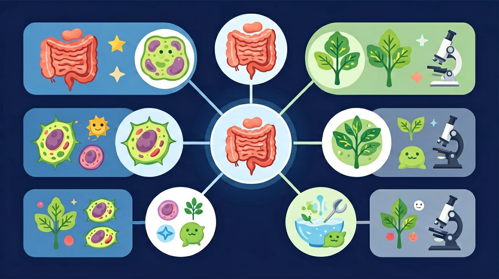

探索食物如何在体内分解吸收，了解消化道与消化腺的协作

🎯 能说出消化系统的6个主要器官名称
🎯 能判断淀粉、蛋白质、脂肪的初始消化部位
🎯 能分析小肠结构与吸收功能的关系
❓ 为什么我饿的时候肚子会咕咕叫？
❓ 嚼馒头为啥越嚼越甜？
❓ 拉肚子时食物去哪儿了？
学完这一课，这些问题你都能自信地回答。
蛋白质初步消化的部位是？
下列不含消化酶的消化液是？
消化道是一条长约9米的管道，食物从口腔进入，沿途被消化，最终残渣从肛门排出。
消化腺分泌消化液，其中含有消化酶，负责将大分子营养物质分解为小分子。
| 消化腺 | 分泌的消化液 | 主要成分/作用 | 作用部位 |
|---|---|---|---|
| 唾液腺 | 唾液 | 唾液淀粉酶 → 分解淀粉 | 口腔 |
| 胃腺 | 胃液 | 盐酸 + 胃蛋白酶 → 分解蛋白质 | 胃 |
| 肝脏 | 胆汁 | 不含消化酶，乳化脂肪（物理消化） | 小肠 |
| 胰腺 | 胰液 | 胰蛋白酶 + 胰脂肪酶 + 胰淀粉酶 | 小肠 |
| 肠腺 | 肠液 | 多种消化酶，完成三大营养物质消化 | 小肠 |
| 营养物质 | 开始消化部位 | 参与消化的酶 | 最终产物 | 消化完成部位 |
|---|---|---|---|---|
| 淀粉 | 口腔 | 唾液淀粉酶 → 胰淀粉酶 → 肠液 | 葡萄糖 | 小肠 |
| 蛋白质 | 胃 | 胃蛋白酶 → 胰蛋白酶 → 肠液 | 氨基酸 | 小肠 |
| 脂肪 | 小肠 | 胆汁乳化 → 胰脂肪酶 → 肠液 | 甘油+脂肪酸 | 小肠 |
下方动画模拟食物在消化道中被蠕动波推送的过程。点击"暂停/播放"控制动画，点击器官查看详情。
本节课在整个「人体生理」知识体系中的位置：
将消化道比作食品加工流水线，各工段有专属工具（消化液）
淀粉被唾液淀粉酶分解成麦芽糖产生甜味
胃液强酸vs胰液弱碱，适应不同酶的工作环境
小肠绒毛展开面积≈网球场的可视化对比
设计太空餐需考虑失重对吞咽消化的影响
情境：跟随一粒米饭，看它经过哪些器官、发生什么变化。
分析：口腔：唾液淀粉酶把部分淀粉初步消化成麦芽糖（米饭嚼久了有甜味，就是这个原因）；胃：胃液中的胃蛋白酶初步消化蛋白质，食物变成食糜；小肠：肠液和胰液含多种消化酶，把淀粉分解为葡萄糖、蛋白质分解为氨基酸、脂肪分解为甘油和脂肪酸；大肠：吸收少量水、无机盐和部分维生素，残渣形成粪便。
结论：消化就是把大分子有机物分解成小分子。只有小分子物质才能穿过消化道壁被吸收进血液，因此小肠是消化和吸收的主要场所。
关于消化系统的叙述正确的是？
设计实验验证温度对酶活性的影响
将左侧消化液/消化酶拖到右侧对应的消化器官中，完成正确匹配。
先独立作答，再点选项查看对错与错因。
下列哪个消化器官同时进行物理和化学消化？
红烧肉中的脂肪主要在哪里被分解？
下列哪种消化液不含消化酶？
淀粉的化学消化从____开始，被____酶分解。
答案：口腔,唾液淀粉
口腔中唾液淀粉酶启动淀粉分解
胃壁分泌的____能激活胃蛋白酶原，最适pH为____。
答案：盐酸,1.5-2
强酸性环境激活胃蛋白酶
✅ 肝脏分泌胆汁，胆囊只负责储存浓缩
💡 器官名称与功能混淆
✅ 淀粉在口腔已被唾液淀粉酶初步消化
💡 忽视口腔化学消化
口诀：口腔咽食道，胃搅小肠长，大肠水分收，肛门排渣忙
类比：消化像快递分拣：拆包（牙齿）-扫码（酶分解）-派送（吸收）-退件（排便）
（中考题）下列小肠结构特点与吸收功能无关的是？
（迁移题）宇航员易发生反流是因为失重影响哪个消化环节？
吃油条时主要被哪种消化液分解？
消化道：口腔 → 咽 → 食道 → 胃 → 小肠 → 大肠 → 肛门。
消化腺：唾液腺（唾液淀粉酶）、胃腺（胃蛋白酶）、肠腺和胰腺（多种消化酶）、肝脏（分泌胆汁，不含消化酶，能把脂肪乳化成微粒）。
三大营养物质：淀粉从口腔开始消化，蛋白质从胃开始消化，脂肪主要在小肠消化；三者最终都在小肠被彻底分解。
小肠是主要场所的原因：长约 5~6 米；内壁有皱襞和小肠绒毛，极大增加了吸收面积；绒毛壁薄，内有丰富的毛细血管和毛细淋巴管。